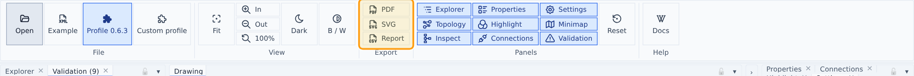

Exports

The ribbon carries three export sections.
Export — the drawing exactly as the file authors it, in its own colors:
- PDF — a vector PDF with embedded metric-compatible fonts (Carlito / Liberation / DejaVu subsets).
- SVG — a spec-mapped, standalone SVG of the drawing with full visual fidelity.
As viewed — the same two formats, but showing what is on your screen right now:
- Black & white mode, if it is on.
- Highlight colors, including hidden legend groups (hidden stays hidden) and Dim others.
- The upstream/downstream trace overlays.
- The alignment underlay, at its current opacity, tint, hide-white and under/over placement.
An as viewed export is always light: white paper and dark ink, whichever theme the app is in. The dark theme is a screen comfort setting, not a property of the drawing — a dark-theme export would print as pale ink on nothing. So switching theme changes nothing in the exported file; everything else in the list above does.
The selection and hover marks are deliberately left out — they follow your pointer, they are not part of the drawing. Files are named <drawing>-as-viewed.pdf / .svg.
Because the underlay is an image, an as viewed export that includes one is part raster and noticeably larger than the plain vector export. Everything else stays vector.
Validation — the findings, with your severity overrides applied:
- Excel — the findings as an Excel workbook (
.xlsx): a frozen, bold header row, an auto-filter on every column andlineas a real number, so sorting and filtering work with a double-click on Windows. No delimiter or locale guessing, unlike CSV. - CSV — the same findings as a CSV file.
Both reports carry the same columns:
| column | what it holds |
|---|---|
rule |
rule id, e.g. SCH-002 |
category |
Schema, Graphics, Connectivity, Model or Meta data |
severity |
error, warning or info (after your overrides) |
objectId |
the object to select in the viewer, when the finding has one |
line |
source line of the offending element in your XML file |
xpath |
positional XPath of that element, e.g. /Model/Object[1]/Components/Object/References[2] |
message |
what is wrong |
line and xpath point at the element the finding is really about — for a dangling reference, the <References> element itself, not just the object that owns it — so you can jump straight to it in your XML editor.
The Validation panel has the same two buttons (CSV, Excel) in its toolbar; they export exactly what the panel's severity overrides say.
Drawing labels always use conventional unit symbols (barg, °C, m³/h) regardless of the unit-display setting.